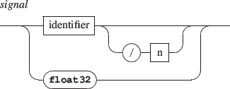

For a given object, its interaction state (i.e. the watched events and the associated messages) can be saved and restored.

Interaction states are managed using a stack where the states are pushed to or popped from.
NOTE
The effect of a pop message addressed to an object with an empty stack is to clear the object current interaction state.